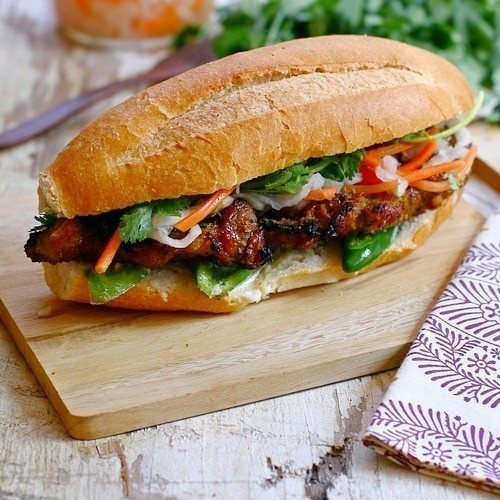

Bahn Mi

Bahn Mi with Lemongrass Pork
1 French style baguettes
2 tbsp mayonnaise
8 oz pork
1/4 cup soy sauce
1 tbsp oyster sauce
1 tsp fish sauce
2 sprigs lemongrass
1 tsp five spice
1/2 cup pickled carrots and daikon
cilantro leaves to taste
Steps
Marginate pork in the soy sauce, fish sauce, oyster sauce, five spice, and lemongrass.
Cut baguette length wise and spread the mayo.
Cook and then cut the pork into 1/4 inch strips and place them on the bread
Top the meat with the pickled diakon and carrots and cilantro